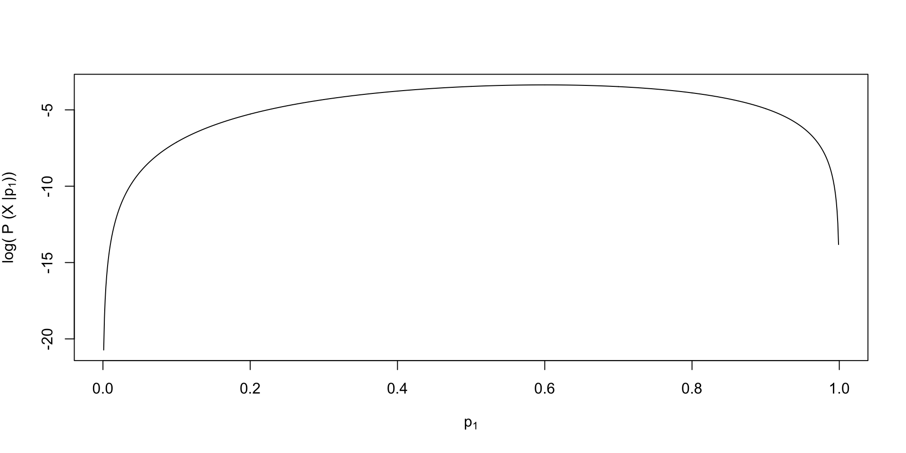
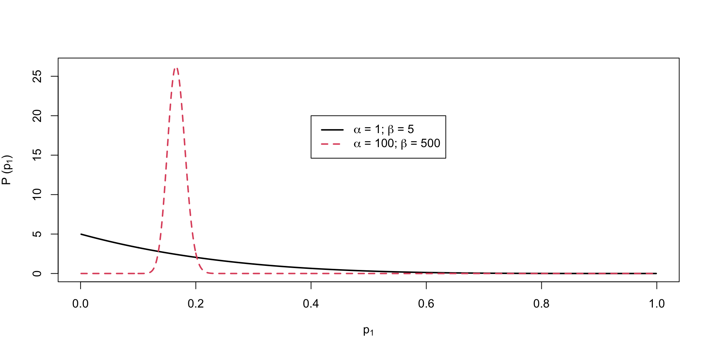
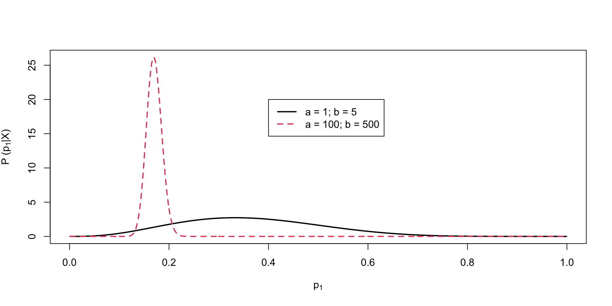
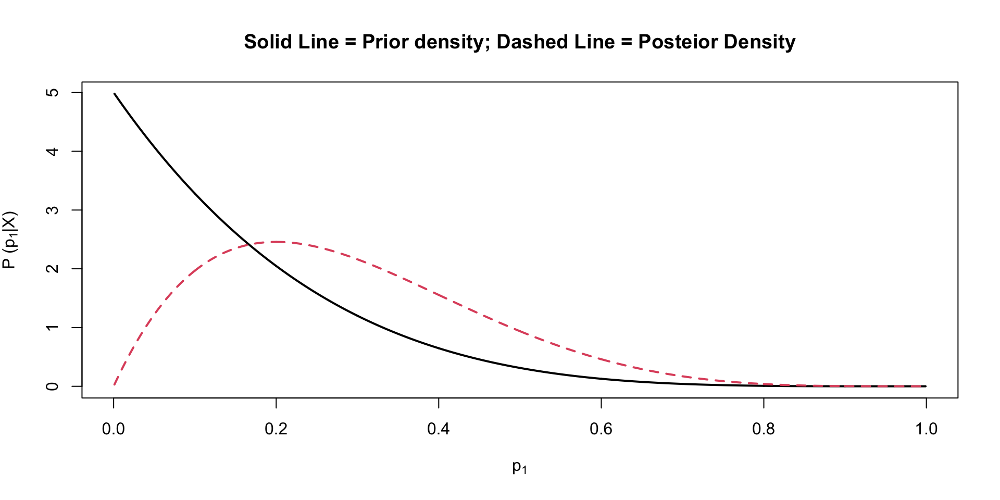

<!DOCTYPE html>
<html lang="en"><head>
<script src="01_Introduction_to_Bayesian_files/libs/clipboard/clipboard.min.js"></script>
<script src="01_Introduction_to_Bayesian_files/libs/quarto-html/tabby.min.js"></script>
<script src="01_Introduction_to_Bayesian_files/libs/quarto-html/popper.min.js"></script>
<script src="01_Introduction_to_Bayesian_files/libs/quarto-html/tippy.umd.min.js"></script>
<link href="01_Introduction_to_Bayesian_files/libs/quarto-html/tippy.css" rel="stylesheet">
<link href="01_Introduction_to_Bayesian_files/libs/quarto-html/quarto-html.min.css" rel="stylesheet" data-mode="light">
<link href="01_Introduction_to_Bayesian_files/libs/quarto-html/quarto-syntax-highlighting.css" rel="stylesheet" id="quarto-text-highlighting-styles"><meta charset="utf-8">
  <meta name="generator" content="quarto-1.0.36">

  <meta name="author" content="Lecture 1">
  <title>Introduction to Bayesian Concepts</title>
  <meta name="apple-mobile-web-app-capable" content="yes">
  <meta name="apple-mobile-web-app-status-bar-style" content="black-translucent">
  <meta name="viewport" content="width=device-width, initial-scale=1.0, maximum-scale=1.0, user-scalable=no, minimal-ui">
  <link rel="stylesheet" href="01_Introduction_to_Bayesian_files/libs/revealjs/dist/reset.css">
  <link rel="stylesheet" href="01_Introduction_to_Bayesian_files/libs/revealjs/dist/reveal.css">
  <style>
    code{white-space: pre-wrap;}
    span.smallcaps{font-variant: small-caps;}
    span.underline{text-decoration: underline;}
    div.column{display: inline-block; vertical-align: top; width: 50%;}
    div.hanging-indent{margin-left: 1.5em; text-indent: -1.5em;}
    ul.task-list{list-style: none;}
  </style>
  <link rel="stylesheet" href="01_Introduction_to_Bayesian_files/libs/revealjs/dist/theme/quarto.css" id="theme">
  <link href="01_Introduction_to_Bayesian_files/libs/revealjs/plugin/quarto-line-highlight/line-highlight.css" rel="stylesheet">
  <link href="01_Introduction_to_Bayesian_files/libs/revealjs/plugin/reveal-menu/menu.css" rel="stylesheet">
  <link href="01_Introduction_to_Bayesian_files/libs/revealjs/plugin/reveal-menu/quarto-menu.css" rel="stylesheet">
  <link href="01_Introduction_to_Bayesian_files/libs/revealjs/plugin/quarto-support/footer.css" rel="stylesheet">
  <style type="text/css">

  .callout {
    margin-top: 1em;
    margin-bottom: 1em;  
    border-radius: .25rem;
  }

  .callout.callout-style-simple { 
    padding: 0em 0.5em;
    border-left: solid #acacac .3rem;
    border-right: solid 1px silver;
    border-top: solid 1px silver;
    border-bottom: solid 1px silver;
    display: flex;
  }

  .callout.callout-style-default {
    border-left: solid #acacac .3rem;
    border-right: solid 1px silver;
    border-top: solid 1px silver;
    border-bottom: solid 1px silver;
  }

  .callout .callout-body-container {
    flex-grow: 1;
  }

  .callout.callout-style-simple .callout-body {
    font-size: 1rem;
    font-weight: 400;
  }

  .callout.callout-style-default .callout-body {
    font-size: 0.9rem;
    font-weight: 400;
  }

  .callout.callout-captioned.callout-style-simple .callout-body {
    margin-top: 0.2em;
  }

  .callout:not(.callout-captioned) .callout-body {
      display: flex;
  }

  .callout:not(.no-icon).callout-captioned.callout-style-simple .callout-content {
    padding-left: 1.6em;
  }

  .callout.callout-captioned .callout-header {
    padding-top: 0.2em;
    margin-bottom: -0.2em;
  }

  .callout.callout-captioned .callout-caption  p {
    margin-top: 0.5em;
    margin-bottom: 0.5em;
  }
    
  .callout.callout-captioned.callout-style-simple .callout-content  p {
    margin-top: 0;
  }

  .callout.callout-captioned.callout-style-default .callout-content  p {
    margin-top: 0.7em;
  }

  .callout.callout-style-simple div.callout-caption {
    border-bottom: none;
    font-size: .9rem;
    font-weight: 600;
    opacity: 75%;
  }

  .callout.callout-style-default  div.callout-caption {
    border-bottom: none;
    font-weight: 600;
    opacity: 85%;
    font-size: 0.9rem;
    padding-left: 0.5em;
    padding-right: 0.5em;
  }

  .callout.callout-style-default div.callout-content {
    padding-left: 0.5em;
    padding-right: 0.5em;
  }

  .callout.callout-style-simple .callout-icon::before {
    height: 1rem;
    width: 1rem;
    display: inline-block;
    content: "";
    background-repeat: no-repeat;
    background-size: 1rem 1rem;
  }

  .callout.callout-style-default .callout-icon::before {
    height: 0.9rem;
    width: 0.9rem;
    display: inline-block;
    content: "";
    background-repeat: no-repeat;
    background-size: 0.9rem 0.9rem;
  }

  .callout-caption {
    display: flex
  }
    
  .callout-icon::before {
    margin-top: 1rem;
    padding-right: .5rem;
  }

  .callout.no-icon::before {
    display: none !important;
  }

  .callout.callout-captioned .callout-body > .callout-content > :last-child {
    margin-bottom: 0.5rem;
  }

  .callout.callout-captioned .callout-icon::before {
    margin-top: .5rem;
    padding-right: .5rem;
  }

  .callout:not(.callout-captioned) .callout-icon::before {
    margin-top: 1rem;
    padding-right: .5rem;
  }

  /* Callout Types */

  div.callout-note {
    border-left-color: #4582ec !important;
  }

  div.callout-note .callout-icon::before {
    background-image: url('');
  }

  div.callout-note.callout-style-default .callout-caption {
    background-color: #dae6fb
  }

  div.callout-important {
    border-left-color: #d9534f !important;
  }

  div.callout-important .callout-icon::before {
    background-image: url('');
  }

  div.callout-important.callout-style-default .callout-caption {
    background-color: #f7dddc
  }

  div.callout-warning {
    border-left-color: #f0ad4e !important;
  }

  div.callout-warning .callout-icon::before {
    background-image: url('');
  }

  div.callout-warning.callout-style-default .callout-caption {
    background-color: #fcefdc
  }

  div.callout-tip {
    border-left-color: #02b875 !important;
  }

  div.callout-tip .callout-icon::before {
    background-image: url('');
  }

  div.callout-tip.callout-style-default .callout-caption {
    background-color: #ccf1e3
  }

  div.callout-caution {
    border-left-color: #fd7e14 !important;
  }

  div.callout-caution .callout-icon::before {
    background-image: url('');
  }

  div.callout-caution.callout-style-default .callout-caption {
    background-color: #ffe5d0
  }

  </style>
  <style type="text/css">
    .reveal div.sourceCode {
      margin: 0;
      overflow: auto;
    }
    .reveal div.hanging-indent {
      margin-left: 1em;
      text-indent: -1em;
    }
    .reveal .slide:not(.center) {
      height: 100%;
    }
    .reveal .slide.scrollable {
      overflow-y: auto;
    }
    .reveal .footnotes {
      height: 100%;
      overflow-y: auto;
    }
    .reveal .slide .absolute {
      position: absolute;
      display: block;
    }
    .reveal .footnotes ol {
      counter-reset: ol;
      list-style-type: none; 
      margin-left: 0;
    }
    .reveal .footnotes ol li:before {
      counter-increment: ol;
      content: counter(ol) ". "; 
    }
    .reveal .footnotes ol li > p:first-child {
      display: inline-block;
    }
    .reveal .slide ul,
    .reveal .slide ol {
      margin-bottom: 0.5em;
    }
    .reveal .slide ul li,
    .reveal .slide ol li {
      margin-top: 0.4em;
      margin-bottom: 0.2em;
    }
    .reveal .slide ul[role="tablist"] li {
      margin-bottom: 0;
    }
    .reveal .slide ul li > *:first-child,
    .reveal .slide ol li > *:first-child {
      margin-block-start: 0;
    }
    .reveal .slide ul li > *:last-child,
    .reveal .slide ol li > *:last-child {
      margin-block-end: 0;
    }
    .reveal .slide .columns:nth-child(3) {
      margin-block-start: 0.8em;
    }
    .reveal blockquote {
      box-shadow: none;
    }
    .reveal .tippy-content>* {
      margin-top: 0.2em;
      margin-bottom: 0.7em;
    }
    .reveal .tippy-content>*:last-child {
      margin-bottom: 0.2em;
    }
    .reveal .slide > img.stretch.quarto-figure-center,
    .reveal .slide > img.r-stretch.quarto-figure-center {
      display: block;
      margin-left: auto;
      margin-right: auto; 
    }
    .reveal .slide > img.stretch.quarto-figure-left,
    .reveal .slide > img.r-stretch.quarto-figure-left  {
      display: block;
      margin-left: 0;
      margin-right: auto; 
    }
    .reveal .slide > img.stretch.quarto-figure-right,
    .reveal .slide > img.r-stretch.quarto-figure-right  {
      display: block;
      margin-left: auto;
      margin-right: 0; 
    }
  </style>
</head>
<body class="quarto-light">
  <div class="reveal">
    <div class="slides">

<section id="title-slide" class="center">
  <h1 class="title">Introduction to Bayesian Concepts</h1>
  <p class="author">Lecture 1</p>
</section>

<section id="todays-lecture-objectives" class="slide level2">
<h2>Today’s Lecture Objectives</h2>
<div>
<ol type="1">
<li>Bayesian Statistics: A Definition</li>
<li>Posterior Distributions</li>
<li>Bayesian Updating</li>
</ol>
</div>
<p>…but, before we formally begin…</p>
</section>
<section id="part-of-my-summer" class="slide level2">
<h2>Part of My Summer…</h2>

<p class="caption">Thomas Bayes (1701-1761)</p></section>
<section id="class-discussion-what-is-bayesian" class="slide level2">
<h2>Class Discussion: What is Bayesian?</h2>
</section>
<section id="bayesian-from-birth" class="slide level2">
<h2>Bayesian from Birth</h2>
<p>A brief video to start the semester… <a href="https://t.co/T9O9UzJVWT">pic.twitter.com/T9O9UzJVWT</a></p>
</section>
<section id="the-basics-of-bayesian-analyses" class="slide level2">
<h2>The Basics of Bayesian Analyses</h2>
<ul>
<li class="fragment">Bayesian statistical analysis refers to the use of models where some or all of the parameters are treated as random components
<ul>
<li class="fragment">Each parameter comes from some type of distribution</li>
</ul></li>
<li class="fragment">The likelihood function of the data is then augmented with an additional term that represents the likelihood of the prior distribution for each parameter
<ul>
<li class="fragment">Think of this as saying each parameter has a certain likelihood – the height of the prior distribution</li>
</ul></li>
<li class="fragment">The final estimates are then considered summaries of the posterior distribution of the parameter, conditional on the data
<ul>
<li class="fragment">In practice, we use these estimates to make inferences, just as is done when using non-Bayesian approaches (e.g., maximum likelihood/least squares)</li>
</ul></li>
</ul>
</section>
<section id="why-are-bayesian-methods-used" class="slide level2">
<h2>Why are Bayesian Methods Used?</h2>
<ul>
<li class="fragment"><p>Bayesian methods get used because of the <em>relative</em> accessibility of one method of estimation (MCMC – to be discussed shortly)</p></li>
<li class="fragment"><p>There are four main reasons why people use MCMC:</p></li>
</ul>
<ol type="1">
<li class="fragment">Missing data</li>
<li class="fragment">Lack of software capable of handling large sized analyses</li>
<li class="fragment">New models/generalizations of models not available in software</li>
<li class="fragment">Philosoplyical Reasons (e.g., membership in the cult of Bayes)</li>
</ol>
</section>
<section id="perceptions-and-issues-with-bayesian-methods" class="slide level2">
<h2>Perceptions and Issues with Bayesian Methods</h2>
<ul>
<li class="fragment">The use of Bayesian statistics has been controversial, historically (but less so today)
<ul>
<li class="fragment">The use of certain prior distributions can produce results that are biased or reflect subjective judgment rather than objective science</li>
</ul></li>
<li class="fragment">Most MCMC estimation methods are computationally intensive
<ul>
<li class="fragment">Until very recently, very few methods available for those who aren’t into programming in Fortran, C, or C++</li>
</ul></li>
<li class="fragment">Understanding of what Bayesian methods had been very limited outside the field of mathematical statistics (but that is changing now)</li>
<li class="fragment">Over the past 20 years, Bayesian methods have become widespread – making new models estimable and becoming standard in some social science fields (quantitative psychology and educational measurement)</li>
</ul>
</section>
<section id="how-bayesian-statistics-work" class="slide level2">
<h2>How Bayesian Statistics Work</h2>
<!-- ::: {.nonincremental} -->
<p>Bayesian methods rely on Bayes’ Theorem <!-- :::  --></p>
<p><span class="math display">\[P (A \mid B) = \frac{P(B\mid A)P(A)}{P(B)} \propto P(B\mid A)P(A)\]</span></p>
<p>Here:</p>
<div>
<ul>
<li><span class="math inline">\(P(A \mid B)\)</span> is the <u>prior distribution</u> (pdf) of A (i.e., WHY THINGS ARE BAYESIAN)</li>
<li><span class="math inline">\(P(B)\)</span> is the <u>marginal distribution</u> (pdf) of B</li>
<li><span class="math inline">\(P(B \mid A)\)</span> is the <u>conditional distribution</u> (pdf) of B, given A</li>
<li><span class="math inline">\(P (A \mid B)\)</span>is the <u>posterior distribution</u> (pdf) of A, given B</li>
</ul>
</div>
</section>
<section id="a-live-bayesian-example" class="slide level2">
<h2>A Live Bayesian Example</h2>
<ul>
<li class="fragment"><p>Suppose we wanted to assess the probability of rolling a one on a six-sided die: <span class="math display">\[p_1 = P(D=1)\]</span></p></li>
<li class="fragment"><p>We then collect a sample of data <span class="math inline">\(\boldsymbol{X} = \{0,1,0,1,1 \}\)</span></p>
<ul>
<li class="fragment">These are independent tosses of the die</li>
</ul></li>
<li class="fragment"><p>The posterior distribution of the probability of a one conditional on the data is: <span class="math display">\[P(p_1 \mid \boldsymbol{X})\]</span></p></li>
<li class="fragment"><p>We can determine this via Bayes theorem: <span class="math display">\[P(p_1 \mid \boldsymbol{X}) = \frac{P(\boldsymbol{X} \mid p_1)P(p_1)}{P(\boldsymbol{X})} \propto P(\boldsymbol{X} \mid p_1)P(p_1)\]</span></p></li>
</ul>
</section>
<section id="defining-the-likelihood-function-pboldsymbolx-mid-p_1" class="slide level2">
<h2>Defining the Likelihood Function <span class="math inline">\(P(\boldsymbol{X} \mid p_1)\)</span></h2>
<p>The likelihood of the data given the parameter:</p>
<p><span class="math display">\[P(\boldsymbol{X} \mid p_1) = \prod_{i=1}^N p_1^{X_i} \left(1-p_1\right)^{(1-X_i)}\]</span></p>
<ul>
<li class="fragment">Any given roll of the dice <span class="math inline">\(X_i\)</span> is a Bernoulli variable <span class="math inline">\(X_i \sim B(p_1)\)</span>
<ul>
<li class="fragment">A “success” is defined by rolling a one</li>
</ul></li>
<li class="fragment">The product in the likelihood function comes from each roll being independent
<ul>
<li class="fragment">The outcome of a roll does not depend on previous or future rolls</li>
</ul></li>
</ul>
</section>
<section id="visualizing-the-likelihood-function" class="slide level2">
<h2>Visualizing the Likelihood Function</h2>

</section>
<section id="choosing-the-prior-distribution-for-p_1" class="slide level2">
<h2>Choosing the Prior Distribution for <span class="math inline">\(p_1\)</span></h2>
<p>We must now pick the prior distribution of <span class="math inline">\(p_1\)</span>:</p>
<p><span class="math display">\[P(p_1)\]</span></p>
<div>
<ul>
<li>Our choice is subjective: Many distributions to choose from</li>
<li>What we know is that for a “fair” die, the probability of rolling a one is <span class="math inline">\(\frac{1}{6}\)</span>
<ul>
<li>But…probability is not a distribution</li>
</ul></li>
<li>Instead, let’s consider a Beta distribution <span class="math inline">\(p_1 \sim Beta\left(\alpha, \beta\right)\)</span></li>
</ul>
</div>
</section>
<section id="the-beta-distribution" class="slide level2">
<h2>The Beta Distribution</h2>
<p>For parameters that range between zero and one (or two finite end points), the Beta distribution makes a good choice for a prior:</p>
<p><span class="math display">\[P(p_1) = \frac{\left( p_1\right)^{\alpha-1} \left(1-p_1 \right)^{\beta1-1}}{B\left(\alpha, \beta\right)}, \]</span></p>
<p>where:</p>
<p><span class="math display">\[B\left(\alpha, \beta\right) = \frac{\Gamma\left(\alpha\right)\Gamma\left(\beta\right)}{\Gamma\left(\alpha+\beta\right)}, \]</span></p>
<p>and,</p>
<p><span class="math display">\[\Gamma\left(z \right) = \int_0^\infty t^{z-1} e^{-t}dt\]</span></p>
</section>
<section id="more-beta-distribution" class="slide level2">
<h2>More Beta Distribution</h2>
<p>The Beta distribution has a mean of <span class="math inline">\(\frac{\alpha}{\alpha+\beta}\)</span></p>
<ul>
<li class="fragment">The parameters <span class="math inline">\(\alpha\)</span> and <span class="math inline">\(\beta\)</span> are called <u>hyperparameters</u>
<ul>
<li class="fragment">Hyperparameters are parameters of prior distributions</li>
</ul></li>
<li class="fragment">We can pick values of <span class="math inline">\(\alpha\)</span> and <span class="math inline">\(\beta\)</span> to correspond to <span class="math inline">\(\frac{1}{6}\)</span>
<ul>
<li class="fragment">Many choices: <span class="math inline">\(\alpha=1\)</span> and <span class="math inline">\(\beta=5\)</span> have the same mean as <span class="math inline">\(\alpha=100\)</span> and <span class="math inline">\(\beta=500\)</span></li>
</ul></li>
<li class="fragment">What is the difference?
<ul>
<li class="fragment">How strongly we feel in our beliefs…as quantified by…</li>
</ul></li>
</ul>
</section>
<section id="more-more-beta-distribution" class="slide level2">
<h2>More More Beta Distribution</h2>
<p>The Beta distribution has a variance of <span class="math inline">\(\frac{\alpha\beta}{\left(\alpha+\beta \right)^2 \left(\alpha+\beta+1 \right))}\)</span></p>
<ul>
<li class="fragment">Choosing <span class="math inline">\(\alpha=1\)</span> and <span class="math inline">\(\beta=5\)</span> yields a prior with mean <span class="math inline">\(\frac{1}{6}\)</span> and variance <span class="math inline">\(0.02\)</span></li>
<li class="fragment">Choosing <span class="math inline">\(\alpha=100\)</span> and <span class="math inline">\(\beta=500\)</span> yields a prior with mean <span class="math inline">\(\frac{1}{6}\)</span> and variance <span class="math inline">\(0.0002\)</span></li>
<li class="fragment">The smaller prior variance means the prior is more <u>informative</u>
<ul>
<li class="fragment">Informative priors are those that have relatively small variances</li>
<li class="fragment"><u>Uninformative</u> priors are those that have relatively large variances</li>
</ul></li>
</ul>
</section>
<section id="visualizing-pp_1" class="slide level2">
<h2>Visualizing <span class="math inline">\(P(p_1)\)</span></h2>

</section>
<section id="the-posterior-distribution" class="slide level2">
<h2>The Posterior Distribution</h2>
<p>Choosing a Beta distribution for a prior for <span class="math inline">\(p_1\)</span> is <em>very</em> convenient</p>
<ul>
<li class="fragment">When combined with Bernoulli (Binomial) data likelihood the posterior distribution can be derived analytically</li>
<li class="fragment">The posterior distribution is also a Beta distribution
<ul>
<li class="fragment"><span class="math inline">\(\alpha = a + \sum_{i=1}^NX_i\)</span> (<span class="math inline">\(a\)</span> is the hyperparameter of the prior distribution)</li>
<li class="fragment"><span class="math inline">\(\beta = b + N - \sum_{i=1}^NX_i\)</span> (<span class="math inline">\(b\)</span> is the hyperparameter of the posterior distribution)</li>
</ul></li>
<li class="fragment">The Beta prior is said to be a <u>conjugate prior</u>: A prior distribution that leads to a posterior distribution of the same family
<ul>
<li class="fragment">Here, prior == Beta and posterior == Beta</li>
</ul></li>
</ul>
</section>
<section id="visualizing-the-posterior-distribution" class="slide level2">
<h2>Visualizing The Posterior Distribution</h2>

</section>
<section id="bayesian-estimates-are-summaries-of-the-posterior-distribution" class="slide level2">
<h2>Bayesian Estimates are Summaries of the Posterior Distribution</h2>
<p>To determine the estimate of <span class="math inline">\(p_1\)</span>, we use summaries of the posterior distribution:</p>
<ul>
<li class="fragment">With prior hyperparameters <span class="math inline">\(a=1\)</span> and <span class="math inline">\(b=5\)</span>
<ul>
<li class="fragment"><span class="math inline">\(\hat{p}_1 = \frac{1+3}{1+3 +5+2} = \frac{4}{11} = .36\)</span></li>
<li class="fragment">SD = <code>0.1388659</code></li>
</ul></li>
<li class="fragment">With prior hyperparameters <span class="math inline">\(a=100\)</span> and <span class="math inline">\(b=500\)</span>
<ul>
<li class="fragment"><span class="math inline">\(\hat{p}_1 = \frac{100+3}{(100+3) + (500+2)} = \frac{103}{605} = .17\)</span></li>
<li class="fragment">SD = <code>0.0152679</code></li>
</ul></li>
<li class="fragment">The standard deviation (SD) of the posterior distribution is analogous to the standard error in frequentist statistics</li>
</ul>
</section>
<section id="bayesian-updating" class="slide level2">
<h2>Bayesian Updating</h2>
<p>We can use the posterior distribution as a prior!</p>
<p>Let’s roll a die to find out how…</p>
<div class="cell">

</div>

</section>
<section id="wrapping-up" class="slide level2">
<h2>Wrapping Up</h2>
<p>Today was a very quick introduction to Bayesian concepts:</p>
<ul>
<li class="fragment"><u>prior distribution</u>
<ul>
<li class="fragment"><u>hyperparameters</u></li>
<li class="fragment"><u>informative/uninformative</u></li>
<li class="fragment"><u>conjugate prior</u></li>
</ul></li>
<li class="fragment"><u>data likelihood</u></li>
<li class="fragment"><u>posterior distribution</u></li>
<li class="fragment">Next we will discuss psychometric models and how they fit into Bayesian methods</li>
</ul>
<div class="footer footer-default">
<p><a href="https://jonathantemplin.com/bayesian-psychometric-modeling-fall-2022/">https://jonathantemplin.com/bayesian-psychometric-modeling-fall-2022/</a></p>
</div>
</section>
    </div>
  </div>

  <script>window.backupDefine = window.define; window.define = undefined;</script>
  <script src="01_Introduction_to_Bayesian_files/libs/revealjs/dist/reveal.js"></script>
  <!-- reveal.js plugins -->
  <script src="01_Introduction_to_Bayesian_files/libs/revealjs/plugin/quarto-line-highlight/line-highlight.js"></script>
  <script src="01_Introduction_to_Bayesian_files/libs/revealjs/plugin/pdf-export/pdfexport.js"></script>
  <script src="01_Introduction_to_Bayesian_files/libs/revealjs/plugin/reveal-menu/menu.js"></script>
  <script src="01_Introduction_to_Bayesian_files/libs/revealjs/plugin/reveal-menu/quarto-menu.js"></script>
  <script src="01_Introduction_to_Bayesian_files/libs/revealjs/plugin/multiplex/socket.io.js"></script>
  <script src="01_Introduction_to_Bayesian_files/libs/revealjs/plugin/multiplex/multiplex.js"></script>
  <script src="01_Introduction_to_Bayesian_files/libs/revealjs/plugin/quarto-support/support.js"></script>
  

  <script src="01_Introduction_to_Bayesian_files/libs/revealjs/plugin/notes/notes.js"></script>
  <script src="01_Introduction_to_Bayesian_files/libs/revealjs/plugin/search/search.js"></script>
  <script src="01_Introduction_to_Bayesian_files/libs/revealjs/plugin/zoom/zoom.js"></script>
  <script src="01_Introduction_to_Bayesian_files/libs/revealjs/plugin/math/math.js"></script>
  <script>window.define = window.backupDefine; window.backupDefine = undefined;</script>

  <script>

      // Full list of configuration options available at:
      // https://revealjs.com/config/
      Reveal.initialize({
'controlsAuto': true,
'previewLinksAuto': false,
'smaller': false,
'pdfSeparateFragments': false,
'autoAnimateEasing': "ease",
'autoAnimateDuration': 1,
'autoAnimateUnmatched': true,
'menu': {"side":"left","useTextContentForMissingTitles":true,"markers":false,"loadIcons":false,"custom":[{"title":"Tools","icon":"<i class=\"fas fa-gear\"></i>","content":"<ul class=\"slide-menu-items\">\n<li class=\"slide-tool-item active\" data-item=\"0\"><a href=\"#\" onclick=\"RevealMenuToolHandlers.fullscreen(event)\"><kbd>f</kbd> Fullscreen</a></li>\n<li class=\"slide-tool-item\" data-item=\"1\"><a href=\"#\" onclick=\"RevealMenuToolHandlers.speakerMode(event)\"><kbd>s</kbd> Speaker View</a></li>\n<li class=\"slide-tool-item\" data-item=\"2\"><a href=\"#\" onclick=\"RevealMenuToolHandlers.overview(event)\"><kbd>o</kbd> Slide Overview</a></li>\n<li class=\"slide-tool-item\" data-item=\"3\"><a href=\"#\" onclick=\"RevealMenuToolHandlers.overview(event)\"><kbd>e</kbd> PDF Export Mode</a></li>\n<li class=\"slide-tool-item\" data-item=\"4\"><a href=\"#\" onclick=\"RevealMenuToolHandlers.keyboardHelp(event)\"><kbd>?</kbd> Keyboard Help</a></li>\n</ul>"}],"openButton":true},
'multiplex': {"secret":"16588527205807063538","id":"c83add39cfa5dec2","url":"https://reveal-multiplex.glitch.me/"},
'smaller': false,
 
        // Display controls in the bottom right corner
        controls: false,

        // Help the user learn the controls by providing hints, for example by
        // bouncing the down arrow when they first encounter a vertical slide
        controlsTutorial: false,

        // Determines where controls appear, "edges" or "bottom-right"
        controlsLayout: 'edges',

        // Visibility rule for backwards navigation arrows; "faded", "hidden"
        // or "visible"
        controlsBackArrows: 'faded',

        // Display a presentation progress bar
        progress: true,

        // Display the page number of the current slide
        slideNumber: 'c/t',

        // 'all', 'print', or 'speaker'
        showSlideNumber: 'all',

        // Add the current slide number to the URL hash so that reloading the
        // page/copying the URL will return you to the same slide
        hash: true,

        // Start with 1 for the hash rather than 0
        hashOneBasedIndex: false,

        // Flags if we should monitor the hash and change slides accordingly
        respondToHashChanges: true,

        // Push each slide change to the browser history
        history: true,

        // Enable keyboard shortcuts for navigation
        keyboard: true,

        // Enable the slide overview mode
        overview: true,

        // Disables the default reveal.js slide layout (scaling and centering)
        // so that you can use custom CSS layout
        disableLayout: false,

        // Vertical centering of slides
        center: false,

        // Enables touch navigation on devices with touch input
        touch: true,

        // Loop the presentation
        loop: false,

        // Change the presentation direction to be RTL
        rtl: false,

        // see https://revealjs.com/vertical-slides/#navigation-mode
        navigationMode: 'linear',

        // Randomizes the order of slides each time the presentation loads
        shuffle: false,

        // Turns fragments on and off globally
        fragments: true,

        // Flags whether to include the current fragment in the URL,
        // so that reloading brings you to the same fragment position
        fragmentInURL: false,

        // Flags if the presentation is running in an embedded mode,
        // i.e. contained within a limited portion of the screen
        embedded: false,

        // Flags if we should show a help overlay when the questionmark
        // key is pressed
        help: true,

        // Flags if it should be possible to pause the presentation (blackout)
        pause: true,

        // Flags if speaker notes should be visible to all viewers
        showNotes: false,

        // Global override for autoplaying embedded media (null/true/false)
        autoPlayMedia: null,

        // Global override for preloading lazy-loaded iframes (null/true/false)
        preloadIframes: null,

        // Number of milliseconds between automatically proceeding to the
        // next slide, disabled when set to 0, this value can be overwritten
        // by using a data-autoslide attribute on your slides
        autoSlide: 0,

        // Stop auto-sliding after user input
        autoSlideStoppable: true,

        // Use this method for navigation when auto-sliding
        autoSlideMethod: null,

        // Specify the average time in seconds that you think you will spend
        // presenting each slide. This is used to show a pacing timer in the
        // speaker view
        defaultTiming: null,

        // Enable slide navigation via mouse wheel
        mouseWheel: false,

        // The display mode that will be used to show slides
        display: 'block',

        // Hide cursor if inactive
        hideInactiveCursor: true,

        // Time before the cursor is hidden (in ms)
        hideCursorTime: 5000,

        // Opens links in an iframe preview overlay
        previewLinks: false,

        // Transition style (none/fade/slide/convex/concave/zoom)
        transition: 'none',

        // Transition speed (default/fast/slow)
        transitionSpeed: 'default',

        // Transition style for full page slide backgrounds
        // (none/fade/slide/convex/concave/zoom)
        backgroundTransition: 'none',

        // Number of slides away from the current that are visible
        viewDistance: 3,

        // Number of slides away from the current that are visible on mobile
        // devices. It is advisable to set this to a lower number than
        // viewDistance in order to save resources.
        mobileViewDistance: 2,

        // The "normal" size of the presentation, aspect ratio will be preserved
        // when the presentation is scaled to fit different resolutions. Can be
        // specified using percentage units.
        width: 1050,

        height: 700,

        // Factor of the display size that should remain empty around the content
        margin: 0.1,

        math: {
          mathjax: 'https://cdnjs.cloudflare.com/ajax/libs/mathjax/2.7.0/MathJax.js',
          config: 'TeX-AMS_HTML-full',
          tex2jax: {
            inlineMath: [['\\(','\\)']],
            displayMath: [['\\[','\\]']],
            balanceBraces: true,
            processEscapes: false,
            processRefs: true,
            processEnvironments: true,
            preview: 'TeX',
            skipTags: ['script','noscript','style','textarea','pre','code'],
            ignoreClass: 'tex2jax_ignore',
            processClass: 'tex2jax_process'
          },
        },

        // reveal.js plugins
        plugins: [QuartoLineHighlight, PdfExport, RevealMenu, QuartoSupport,

          RevealMath,
          RevealNotes,
          RevealSearch,
          RevealZoom
        ]
      });
    </script>
    
    <script>
      // htmlwidgets need to know to resize themselves when slides are shown/hidden.
      // Fire the "slideenter" event (handled by htmlwidgets.js) when the current
      // slide changes (different for each slide format).
      (function () {
        function fireSlideChanged(previousSlide, currentSlide) {

          // dispatch for htmlwidgets
          const event = window.document.createEvent("Event");
          event.initEvent("slideenter", true, true);
          window.document.dispatchEvent(event);

          // dispatch for shiny
          if (window.jQuery) {
            if (previousSlide) {
              window.jQuery(previousSlide).trigger("hidden");
            }
            if (currentSlide) {
              window.jQuery(currentSlide).trigger("shown");
            }
          }
        }

        // hookup for reveal
        if (window.Reveal) {
          window.Reveal.addEventListener("slidechanged", function(event) {
            fireSlideChanged(event.previousSlide, event.currentSlide);
          });
        }

        // hookup for slidy
        if (window.w3c_slidy) {
          window.w3c_slidy.add_observer(function (slide_num) {
            // slide_num starts at position 1
            fireSlideChanged(null, w3c_slidy.slides[slide_num - 1]);
          });
        }

      })();
    </script>

    <script id="quarto-html-after-body" type="application/javascript">
    window.document.addEventListener("DOMContentLoaded", function (event) {
      const toggleBodyColorMode = (bsSheetEl) => {
        const mode = bsSheetEl.getAttribute("data-mode");
        const bodyEl = window.document.querySelector("body");
        if (mode === "dark") {
          bodyEl.classList.add("quarto-dark");
          bodyEl.classList.remove("quarto-light");
        } else {
          bodyEl.classList.add("quarto-light");
          bodyEl.classList.remove("quarto-dark");
        }
      }
      const toggleBodyColorPrimary = () => {
        const bsSheetEl = window.document.querySelector("link#quarto-bootstrap");
        if (bsSheetEl) {
          toggleBodyColorMode(bsSheetEl);
        }
      }
      toggleBodyColorPrimary();  
      const tabsets =  window.document.querySelectorAll(".panel-tabset-tabby")
      tabsets.forEach(function(tabset) {
        const tabby = new Tabby('#' + tabset.id);
      });
      const clipboard = new window.ClipboardJS('.code-copy-button', {
        target: function(trigger) {
          return trigger.previousElementSibling;
        }
      });
      clipboard.on('success', function(e) {
        // button target
        const button = e.trigger;
        // don't keep focus
        button.blur();
        // flash "checked"
        button.classList.add('code-copy-button-checked');
        var currentTitle = button.getAttribute("title");
        button.setAttribute("title", "Copied!");
        setTimeout(function() {
          button.setAttribute("title", currentTitle);
          button.classList.remove('code-copy-button-checked');
        }, 1000);
        // clear code selection
        e.clearSelection();
      });
      function tippyHover(el, contentFn) {
        const config = {
          allowHTML: true,
          content: contentFn,
          maxWidth: 500,
          delay: 100,
          arrow: false,
          appendTo: function(el) {
              return el.closest('section.slide') || el.parentElement;
          },
          interactive: true,
          interactiveBorder: 10,
          theme: 'quarto-reveal',
          placement: 'bottom-start'
        };
          config['offset'] = [0,0];
          config['maxWidth'] = 700;
        window.tippy(el, config); 
      }
      const noterefs = window.document.querySelectorAll('a[role="doc-noteref"]');
      for (var i=0; i<noterefs.length; i++) {
        const ref = noterefs[i];
        tippyHover(ref, function() {
          let href = ref.getAttribute('href');
          try { href = new URL(href).hash; } catch {}
          const id = href.replace(/^#\/?/, "");
          const note = window.document.getElementById(id);
          return note.innerHTML;
        });
      }
      var bibliorefs = window.document.querySelectorAll('a[role="doc-biblioref"]');
      for (var i=0; i<bibliorefs.length; i++) {
        const ref = bibliorefs[i];
        const cites = ref.parentNode.getAttribute('data-cites').split(' ');
        tippyHover(ref, function() {
          var popup = window.document.createElement('div');
          cites.forEach(function(cite) {
            var citeDiv = window.document.createElement('div');
            citeDiv.classList.add('hanging-indent');
            citeDiv.classList.add('csl-entry');
            var biblioDiv = window.document.getElementById('ref-' + cite);
            if (biblioDiv) {
              citeDiv.innerHTML = biblioDiv.innerHTML;
            }
            popup.appendChild(citeDiv);
          });
          return popup.innerHTML;
        });
      }
    });
    </script>
    

</body></html>